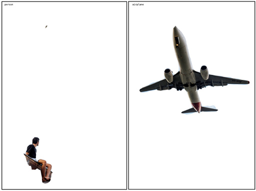

Objetivos
- Diferenciar qué es un "task" en Machine Learning según Hugging Face.
- Aprender los conceptos y ejemplos de estimación de profundidad, clasificación y segmentación de imágenes.
- Probar ejemplos prácticos con pipelines de Hugging Face.
Hugging Face es el portal para todas las tareas de aprendizaje automático. Aquí encontraremos todo lo necesario para empezar con una tarea: demostraciones, casos de uso, modelos, conjuntos de datos y mucho más.
¿Qué es un task?
Un task en Hugging Face define el tipo de problema que un modelo está diseñado para resolver. Esta clasificación facilita la búsqueda, prueba y reutilización de modelos según la tarea específica que se desea abordar.
Tasks (tareas) en Hugging Face

Uso de Hugging Face para tareas de Visión por Computadora
Hugging Face también proporciona una amplia colección de modelos preentrenados para tareas de visión artificial. Con todos estos modelos alojados previamente entrenados, podemos crear aplicaciones interesantes que detectan objetos en imágenes, la edad de una persona y más. En este tema, aprenderemos a realizar las primeras cuatro tareas utilizando modelos de Hugging Face.
1. Clasificación de Imágenes (Image Classification)
La clasificación de imágenes es una tarea de visión por computador que consiste en asignar una o varias etiquetas predefinidas a una imagen, según su contenido.

Ejemplos de aplicaciones
- Diagnóstico médico: clasificación de radiografías para detectar enfermedades.
- Reconocimiento de objetos
- Clasificación de productos en e-commerce
- Moderación de contenido visual
Modelos disponibles en Hugging Face
Hugging Face ofrece múltiples modelos preentrenados para clasificación de imágenes. Estos modelos han sido entrenados con grandes conjuntos de datos, como ImageNet, lo que les permite reconocer una amplia variedad de objetos y escenas. Algunos destacados:
| Modelo | Arquitectura | Dataset de entrenamiento | Enlace |
|---|---|---|---|
google/vit-base-patch16-224 |
Vision Transformer (ViT) | ImageNet | 🔗 Ver modelo |
microsoft/resnet-50 |
ResNet-50 | ImageNet | 🔗 Ver modelo |
facebook/deit-base-patch16-224 |
DeiT | ImageNet | 🔗 Ver modelo |
"Quick, Draw!" de Google

Quick, Draw! es un juego basado en aprendizaje automático en el que una red neuronal intenta adivinar el objeto que el usuario está dibujando. Evidentemente, no siempre funciona; pero cuanto más tiempo pasemos jugando, más aprenderá. Destacar que ya reconoce cientos de conceptos y esperan poder añadir más en el futuro. El gran objetivo de esta aplicación, es mostrar un ejemplo de cómo se puede usar el aprendizaje automático de forma divertida.
Características clave
-
Juego con IA: El juego es un experimento de aprendizaje automático. El jugador dibuja y la red neuronal intenta adivinar el dibujo en tiempo real.
-
Aprendizaje continuo: La IA aprende de cada dibujo, mejorando su capacidad para adivinar correctamente en el futuro. Esto ayuda a Google a recopilar uno de los conjuntos de datos de garabatos más grandes del mundo para la investigación en aprendizaje automático.
-
Mecánica simple: El juego es similar al Pictionary. Consiste en seis rondas, y en cada una se nos pide dibujar un objeto diferente en 20 segundos. Al final, podemos ver nuestros dibujos y los resultados.
Podemos acceder al juego en el sitio web oficial: Web oficial.
Importancia de los datos - BigData
Los datos recopilados en Quick, Draw! son fundamentales para el Big Data y el aprendizaje automático, ya que constituyen el conjunto de datos de garabatos más grande del mundo, esencial para entrenar y mejorar modelos de IA. Su importancia radica en varios puntos clave:
-
Entrenamiento de IA: Los millones de dibujos (actualmente más de 50 millones en 345 categorías) sirven como un vasto corpus de datos para entrenar redes neuronales, enseñándoles a reconocer e interpretar garabatos de formas muy diversas. La IA aprende a identificar patrones visuales, sin importar el estilo individual del dibujante.
-
Diversidad y variabilidad: A diferencia de conjuntos de datos de imágenes tradicionales, los garabatos muestran una enorme variabilidad en cómo las personas de diferentes culturas y con distintas habilidades dibujan un mismo objeto. Esta diversidad es crucial para crear modelos de IA más robustos y menos sesgados que puedan funcionar globalmente.
-
Datos en tiempo real y secuenciales: Los dibujos se capturan como series temporales de posiciones del lápiz (vectores con marca de tiempo), no solo como imágenes estáticas. Esto permite a los investigadores comprender no solo el resultado final, sino también el proceso de dibujo (qué trazo se hizo primero, en qué dirección), lo cual es valioso para desarrollar modelos de IA más avanzados, como el modelo Sketch-RNN (Recurrent Neural Network para Bocetos es un modelo generativo de aprendizaje automático desarrollado por David Ha y Douglas Eck en Google Brain, que es capaz de crear, completar y manipular bocetos vectoriales de objetos comunes)
-
Investigación abierta: Google ha hecho público este conjunto de datos para que investigadores de todo el mundo puedan utilizarlo en sus propios proyectos y estudios de aprendizaje automático, fomentando la innovación en el campo.
-
Ejemplo de gamificación para la recolección de datos: El juego es un excelente ejemplo de cómo la gamificación puede motivar a un gran número de usuarios a generar datos valiosos de forma divertida y a gran escala, un desafío común en el Big Data.

En esta página podemos ver, en el momento en el que se redactaban estos apuntes, 126.372 dibujos de pelotas de baloncesto hechas por personales reales...en Internet. Incluso, podemos ver los trazos que han realizado estas personas hasta que el modelo ha sido capaz de adivinar el dibujo. Destacar la importancia del Big Data, ya que, los datos de entrenamiento son muy importantes para cualquier modelo de aprendizaje.
Datos de entrenamiento para la pelota de baloncesto

Desarrollo de nuestro propio Pictionary con Gradio
Vamos a desarrollar nuestra propia aplicación Pictionary utilizando Gradio, basada en el siguiente vídeo: https://www.youtube.com/watch?v=LS9Y2wDVI0k
Todos los ficheros se encuentran en el siguiente espacio de Hugging Face: https://huggingface.co/spaces/nateraw/quickdraw
Lo primero que debemos es, descargar los ficheros siguientes: class_names.txt, pytorch_model.bin y app.py
Analizamos el código elaborado por el usuario:
1 2 3 4 5 6 7 8 9 10 11 12 13 14 15 16 17 18 19 20 21 22 23 24 25 26 27 28 29 30 31 32 33 34 35 36 37 38 39 40 41 42 43 44 45 46 47 48 49 50 51 52 53 54 55 56 57 58 59 60 61 62 63 64 65 66 67 68 69 70 71 | |
¿Qué es una red neuronal convolucional (CNN)?
Una red neuronal convolucional (CNN, por sus siglas en inglés, Convolutional Neural Network) es un tipo de red neuronal artificial especialmente diseñada para procesar datos que tienen una estructura en forma de cuadrícula, como imágenes, audio o vídeo.
Características principales
-
Inspiración biológica:: Las CNNs se inspiran en la corteza visual de los mamíferos. Primero detectan reglas simples (líneas, bordes) y después patrones más complejos (formas, objetos).
-
Arquitectura en capas:
Una CNN está compuesta por diferentes capas conectadas:- Capas convolucionales: Aplican filtros o “kernels” para extraer patrones y características locales (bordes, texturas, esquinas).
- Capas de activación (ReLU): Introducen no linealidad, permitiendo que la red aprenda funciones más complejas.
- Capas de agrupamiento (pooling): Reducen la resolución espacial y la cantidad de computación, logrando robustez ante desplazamientos.
- Capas totalmente conectadas: Integran toda la información para tomar decisiones y realizar la predicción final.
-
Aprendizaje jerárquico:
Las CNNs aprenden jerarquías de características: Las primeras capas detectan elementos simples, las siguientes combinan estos elementos y las últimas reconocen patrones complejos y abstractos. -
Campos receptivos y parámetros compartidos: Los filtros se aplican en toda la imagen usando los mismos parámetros, lo que permite detectar el mismo patrón en distintas posiciones. Así, el número de parámetros y el coste de memoria disminuyen en comparación con una red completamente conectada.
Aplicaciones típicas
- Reconocimiento y clasificación de imágenes: Detección de objetos, diagnóstico médico, moderación de contenido, etc.
- Visión por computador: Conducción autónoma, videovigilancia, análisis de tráfico.
- Procesamiento de vídeo: Reconocimiento de acciones, seguimiento de objetos en secuencias de imágenes, análisis deportivo.
Ejemplo didáctico sencillo
Cuando pasas una imagen por una CNN:
- Las primeras capas detectan bordes y formas sencillas.
- Las siguientes detectan partes más grandes (ruedas, patas, ojos).
- Al final, la red puede identificar el objeto completo (ej. “bicicleta”, “gato”, “persona”) en la imagen.
Como hemos comprobado en el ejemplo, el código desarrollado por el usuario no funciona actualmente, por lo que debemos realizar algunas mejoras para que el código original funcione. A continuación podemos visualizar la solución final:
1 2 3 4 5 6 7 8 9 10 11 12 13 14 15 16 17 18 19 20 21 22 23 24 25 26 27 28 29 30 31 32 33 34 35 36 37 38 39 40 41 42 43 44 45 46 47 48 49 50 51 52 53 54 55 56 57 58 59 60 61 62 63 64 65 66 67 68 69 70 71 72 73 74 75 76 77 78 79 80 81 82 83 | |
La función softmax de torch (PyTorch) es una operación matemática que transforma un vector de valores reales —normalmente llamados "logits"— en una distribución de probabilidades sobre diferentes clases, donde todos los elementos resultantes están entre 0 y 1 y la suma es exactamente 1. Por ejemplo, si tu modelo clasifica imágenes en tres clases, la salida softmax será un vector con tres valores que representan la probabilidad atribuida a cada clase.
En PyTorch, podemos usar esta función tanto como capa de activación en la salida de nuestro modelo, como directamente llamando torch.nn.functional.softmax() sobre un tensor de logits. Es común utilizar softmax en la inferencia para obtener probabilidades interpretables, mientras que durante el entrenamiento suele usarse CrossEntropyLoss, que incorpora la softmax de forma interna y más eficiente.
Aplicaciones comunes:
- Clasificación multiclase: transforma las salidas del modelo en probabilidades para cada categoría.
- Visualización de la confianza del modelo en cada posible resultado. En resumen, softmax convierte los resultados numéricos en probabilidades útiles para tomar decisiones y analizar resultados en Deep learning.
📝 Actividad 1. Usar un Space de Hugging Face
Basándote en lo aprendido a partir de los casos de uso de Hola Spaces y Hola Spaces 2.0 trabajadas en una sesión anterior, mediante Gradio en Hugging Face crea un nuevo espacio público en tu cuenta que permita probar la aplicación del pictionary desarrollada de forma local en un Space de Hugging Face.
Entrega la url del espacio y algunas capturas de pantalla usando la aplicación.
2. Detección de objetos

La detección de objetos predice la distancia de cada píxel respecto a la cámara usando solo una imagen. Es una técnica fundamental en visión computacional que permite identificar y localizar instancias de objetos definidos dentro de imágenes. Es ampliamente utilizada en aplicaciones como conducción autónoma, seguimiento de objetos en deportes, búsqueda de imágenes y conteo de objetos en diferentes escenarios.
Hugging Face alberga varios modelos que han sido entrenados previamente para detectar objetos en imágenes. Podemos ver una lista de modelos en https://huggingface.co/models?pipeline_tag=object-detection&sort=trending
En la figura siguiente podemos visualizar un listado de la categoría Object Detection:

Ejemplo de uso del modelo facebook/detr-resnet-50 para la detección de objetos:

Podemos probar el modelo directamente utilizando la API de inferencia alojada en Hugging Face. Para ello, usaremos una imagen de una oficina con algunas mujeres:

Fuente: https://en.wikipedia.org/wiki/Office#/media/File:Good_Smile_Company_offices_ladies.jpg
{kind=link}
Al arrastrar y soltar la imagen en la sección "Inference API" alojada en la página del modelo en Hugging Face, veremos la lista de objetos detectados, así como sus probabilidades correspondientes:

Al pasar el ratón por encima del nombre de un objeto detectado, la imagen resalta el cuadro delimitador del objeto seleccionado.
Algunos modelos disponibles en Hugging Face
Hugging Face ofrece modelos preentrenados que permiten realizar detección de objetos sin necesidad de entrenamiento adicional.
| Modelo | Arquitectura | Dataset | Enlace |
|---|---|---|---|
facebook/detr-resnet-50 |
DETR (DEtection TRansformer) | COCO | 🔗 Ver modelo |
hustvl/yolos-small |
YOLOS (Vision Transformer) | COCO | 🔗 Ver modelo |
Principales Aplicaciones
- Conducción autónoma: Los coches sin conductor usan la detección de objetos para reconocer peatones, bicicletas, semáforos y señales de tráfico, ayudando a la toma de decisiones en tiempo real.
- Seguimiento en deportes: En partidos de fútbol o tenis se rastrea el balón o los jugadores para mejorar el arbitraje y el análisis estadístico.
- Búsqueda de imágenes: Los teléfonos inteligentes permiten buscar lugares u objetos directamente en internet mediante la detección de entidades en fotos.
- Conteo de objetos: La detección ayuda a contar existencias en almacenes, tiendas, o personas en eventos.
Métricas de Evaluación
- Precisión media promedio (AP): Área bajo la curva de precisión versus recall para cada clase.
- mAP (mean Average Precision): Promedio de AP en todas las clases.
- APα: Precisión promedio según el umbral de IoU (por ejemplo, AP50 muestra AP cuando el IoU es >0,5).
Ejemplo de uso con Gradio
Vamos a crear una aplicación web con Gradio que use un objeto pipeline del modelo facebook/detr-resnet-50.
Así es como se carga:
from transformers import pipeline
detection = pipeline("object-detection", model="facebook/detr-resnet-50")
results = detection(image)
results
results = detection('http://bit.ly/46xv3sL')
# Si no funcionara, prueba a descargar el fichero y ejecutarlo de forma local:
results = detection('Good_Smile_Company_offices_ladies.jpg')
timm (PyTorch Image Models) para Python. Es una extensa colección de modelos de visión por computadora de última generación (SOTA, por sus siglas en inglés). Está diseñada para ser utilizada con el framework PyTorch y es muy apreciada en la comunidad de aprendizaje profundo por su flexibilidad y la gran cantidad de modelos preentrenados que ofrece.
pip install timm
[{'score': 0.9179903864860535,
'label': 'person',
'box': {'xmin': 549, 'ymin': 145, 'xmax': 564, 'ymax': 165}},
{'score': 0.9960624575614929,
'label': 'tv',
'box': {'xmin': 317, 'ymin': 212, 'xmax': 416, 'ymax': 299}},
{'score': 0.9425505995750427,
'label': 'chair',
'box': {'xmin': 508, 'ymin': 306, 'xmax': 661, 'ymax': 429}},
{'score': 0.9753392338752747,
'label': 'person',
'box': {'xmin': 673, 'ymin': 135, 'xmax': 705, 'ymax': 174}},
{'score': 0.962176501750946,
'label': 'person',
'box': {'xmin': 703, 'ymin': 115, 'xmax': 722, 'ymax': 140}},
{'score': 0.9881888628005981,
'label': 'person',
'box': {'xmin': 454, 'ymin': 142, 'xmax': 497, 'ymax': 202}},
{'score': 0.9871691465377808,
'label': 'keyboard',
'box': {'xmin': 344, 'ymin': 276, 'xmax': 445, 'ymax': 346}},
{'score': 0.9371852874755859,
'label': 'tv',
'box': {'xmin': 309, 'ymin': 194, 'xmax': 374, 'ymax': 237}},
{'score': 0.9975801706314087,
'label': 'person',
'box': {'xmin': 395, 'ymin': 152, 'xmax': 446, 'ymax': 216}},
{'score': 0.9986708164215088,
'label': 'person',
'box': {'xmin': 237, 'ymin': 174, 'xmax': 308, 'ymax': 264}},
{'score': 0.9173707365989685,
'label': 'person',
'box': {'xmin': 720, 'ymin': 112, 'xmax': 737, 'ymax': 131}},
{'score': 0.9895991086959839,
'label': 'potted plant',
'box': {'xmin': 124, 'ymin': 211, 'xmax': 230, 'ymax': 330}},
{'score': 0.9996592998504639,
'label': 'person',
'box': {'xmin': 369, 'ymin': 226, 'xmax': 535, 'ymax': 427}},
{'score': 0.9821581840515137,
'label': 'tv',
'box': {'xmin': 491, 'ymin': 181, 'xmax': 530, 'ymax': 223}},
{'score': 0.9970135688781738,
'label': 'person',
'box': {'xmin': 516, 'ymin': 177, 'xmax': 628, 'ymax': 318}}]
import random
draw = ImageDraw.Draw(image)
for object in results:
box = [i for i in object['box'].values()]
print(
f"Detected {object['label']} with confidence "
f"{(object['score'] * 100):.2f}% at {box}"
)
r = random.randint(0, 255)
g = random.randint(0, 255)
b = random.randint(0, 255)
color = (r, g, b)
draw.rectangle(box,
outline=color,
width=2)
draw.text((box[0], box[1]-10),
object['label'],
fill='white')
display(image)
model.config.id2label:
detection.model.config.id2label
Actividad guiada
Desarrollar con Gradio un template similar es este:
 Resultado final:
Resultado final:

Define:
- Una función llamada predict
- Interface Gradio que envíe una imagen y muestre la imagen con los objetos detectados
Código final en Gradio:
# AQUÍ IRÁ LA SOLUCIÓN
📝 Actividad 2: Comparativa práctica de Detección de Objetos con Hugging Face y Ultralytics YOLO11
Contexto
Hemos trabajado en clase con modelos de detección de objetos, usando ejemplos como facebook/detr-resnet-50 en Hugging Face (ver ejemplo y recursos de clase).
En esta actividad, irás un paso más allá probando la herramienta Ultralytics YOLO11, consultando su documentación oficial de integración con Gradio.
Objetivos
- Investigar y comprender el funcionamiento de la familia YOLO (en especial YOLO11).
- Probar distintos códigos y ejemplos reales usando YOLO11 y Gradio.
- Comparar los resultados con los de
facebook/detr-resnet-50en velocidad, facilidad de uso y precisión. - Reflexionar sobre ventajas e inconvenientes de cada enfoque en distintos escenarios reales.
1. Lectura e investigación inicial
- Lee la documentación de Ultralytics YOLO11 y familiarízate con su API y flujo de trabajo.
- Consulta y ejecuta el ejemplo de integración con Gradio: docs oficiales.
2. Implementación y pruebas
- Ejecuta la demo básica de YOLO11+Gradio incluida en la documentación.
- Ejecuta la demo ampliada de YOLO11+Gradio incluida en la documentación.
- Realiza anotaciones sobre el input, formato de resultados y velocidad tras varias ejecuciones con imágenes reales o ejemplos propios.
3. Comparativa objetiva con Hugging Face
- Utiliza el modelo
facebook/detr-resnet-50desde Hugging Face (ya visto en clase) para detectar objetos en al menos dos imágenes iguales a las usadas en YOLO11. -
Rellena la tabla comparativa: | Imagen | Modelo | Objetos detectados | Tiempo de inferencia | Falsos positivos/negativos | Facilidad de integración | Observaciones | |-------------------|------------------------|--------------------|----------------------|----------------------------|-------------------------|---------------------------| | (insertar nombre) | YOLO11 | | | | | | | (insertar nombre) | detr-resnet-50 (HF) | | | | | |
-
Comenta los resultados en términos de:
- Exactitud y número/calidad de predicciones.
- Consumo de recursos y tiempo de ejecución (compara si es posible en CPU y GPU).
- Facilidad de uso/grado de documentación o número de líneas de código para uso en Gradio.
Entrega
- Un archivo
.pycon el código empleado y comentarios. - Las imágenes o capturas de pantalla de las pruebas realizadas.
- Rellena y agrega la tabla comparativa.
3. Segmentación de imágenes (Image segmentation)
La segmentación de imágenes es una técnica de visión por computador que divide una imagen en segmentos o regiones, cada una correspondiente a un objeto de interés. Con la segmentación de imágenes, podemos analizar una imagen y extraer información valiosa de ella.
Algunos de sus usos son:
- Imágenes médicas: se utilizan para identificar y segmentar tumores en resonancias magnéticas o tomografías computarizadas
- Detección y reconocimiento de objetos: al igual que la detección de objetos que hemos visto anteriormente, también podemos utilizar la segmentación de imágenes para identificar y localizar objetos en una imagen
- Procesamiento de documentos: se utiliza para segmentar regiones de texto en documentos escaneados
- Biometría: se utiliza para identificar y localizar rostros en imágenes o fotogramas de vídeo
Hugging Face contiene varios modelos de segmentación de imágenes que podemos utilizar. Uno de ellos es el modelo "SegFormer model fine-tuned on ADE20k" (https://huggingface.co/nvidia/segformer-b0-finetuned-ade-512-512). La siguente imagen muestra el modelo SegFormer ajustado en el modelo ADE20k en el sitio web de Hugging Face:

Para probar el modelo de segmentación, usaremos una imagen del Taj Mahal. La arrastraremos y la soltaremos en la sección de "Hosted inference API" alojada en la página de Hugging Face:
Imagen del Taj Mahal
 Fuente: https://mng.bz/5vzD
Fuente: https://mng.bz/5vzD
Resultado de la segmentación de imágenes utilizando una imagen del Taj Mahal:

Como podemos ver en el resultado, el modelo puede detectar diferentes objetos (como edificios, cielos, árboles, etc.) en la imagen y resaltar los diversos segmentos en la imagen. De hecho, podemos pasar el ratón sobre las diversas etiquetas segmentadas y la imagen resaltará dicha etiqueta seleccionada.
Uso del modelo con pipeline
Como es habitual, usaremos el modelo mediante programación. Primero, cargamos el modelo y luego verificamos cuántos objetos puede detectar el modelo. La forma más fácil de usar el modelo es usar un pipeline de la librería transformer:
from transformers import pipeline
segmentation = pipeline("image-segmentation",
model="nvidia/segformer-b0-finetuned-ade-512-512")
segmentation.model.config.id2label
{0: 'wall',
1: 'building',
2: 'sky',
3: 'floor',
4: 'tree',
...
145: 'shower',
146: 'radiator',
147: 'glass',
148: 'clock',
149: 'flag'}

Fuente: https://unsplash.com/photos/EC_GhFRGTAY
Para detectar los distintos segmentos de la imagen, pasamos la dirección URL de una imagen al objeto pipeline:
1 2 3 4 5 6 7 8 | |
[{'score': None,
'label': 'wall',
'mask': <PIL.Image.Image image mode=L size=1587x2381>},
{'score': None,
'label': 'building',
'mask': <PIL.Image.Image image mode=L size=1587x2381>},
{'score': None,
'label': 'sky',
'mask': <PIL.Image.Image image mode=L size=1587x2381>},
{'score': None,
'label': 'person',
'mask': <PIL.Image.Image image mode=L size=1587x2381>},
{'score': None,
'label': 'airplane',
'mask': <PIL.Image.Image image mode=L size=1587x2381>}]
1 2 3 | |
La figura siguiente muestra las máscaras detectadas para person (persona) y airplane (avión):

La parte blanca de la máscara representa la parte de la imagen que contiene el segmento de interés. Podemos aplicar la máscara sobre la imagen original mediante el siguiente fragmento de código:
1 2 3 4 5 6 7 8 9 10 11 | |

Cuando aplicamos la máscara sobre la imagen, observaremos que el segmento de interés está en blanco. Sería más natural invertir esto, es decir, el segmento de interés debería mostrarse mientras que el resto debería estar en blanco. Para hacer esto, podemos invertir la máscara usando la función invert() de la clase ImageOps en el paquete PIL. Los siguientes cambios invierten la máscara y, a continuación, la aplican sobre la imagen original:
1 2 3 4 5 6 7 8 9 10 | |

📝 Actividad 3: Comparativa práctica de Detección de Objetos con Hugging Face y Ultralytics YOLO11
Crea un prototipo mediante Gradio haciendo uso de la clase Interface que te permita probar el modelo de segmentación basándote en el siguiente prototipo:

Pasamos una foto y en el campo Label especificamos el objeto a buscar, por ejemplo, person:

Resultados:
Detección de person

Detección de airplane
 Pasos:
Pasos:
- Definir la interfaz de Gradio con los componentes de entrada y de salida similares al prototipo de la imagen
- Crea una función “segmentation” que reciba los parámetros de entrada correspondientes. Dentro de dicha función
- Cuando el modelo devuelva el resultado, iterará a través del resultado y buscará la etiqueta especificada por el usuario (en el parámetro label).
- A continuación, la función invierte la máscara correspondiente, la aplica a la imagen y la devuelve automáticamente.
NOTA: Dentro de la función deberías de imprimir los labels que te devuelve el modelo para saber
Realiza algunas pruebas con imágenes diferentes y adjunta en este documento los resultados.
Entrega el fichero py y las imágenes que hayas utilizado.